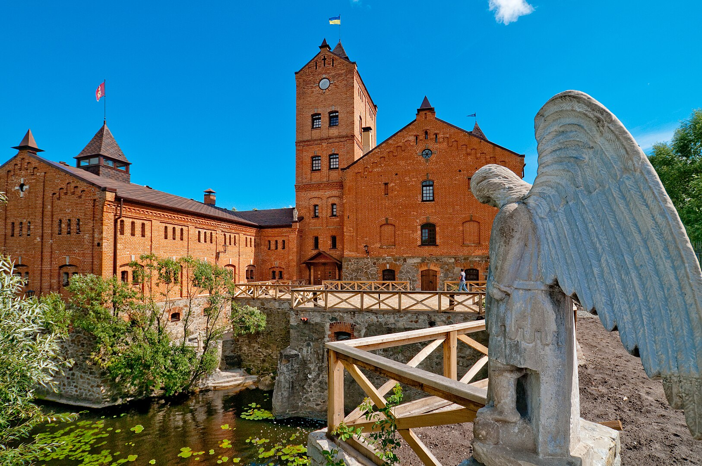
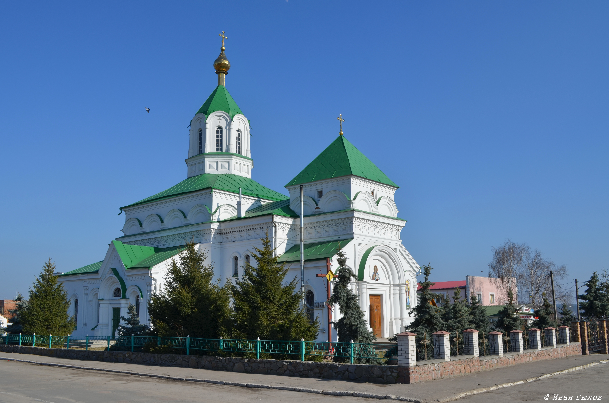

Радомишль
Житомирська область, Житомирський район
Цікаві місця
Замок Радомисль
Історико-культурний комплекс «Замок Радомисль» – приватний музейний комплекс, створений у місті Радомишлі (Житомирська область, Україна) українським лікарем, доктором медицини Ольгою Богомолець. Включає єдиний у Європі Музей української домашньої ікони. В його основі – особиста колекція ікон, яку Ольга Богомолець збирала з 1995 року. В експозиціях та фондах комплексу представлені також колекції предметів сакрального мистецтва та церковного начиння, українських та європейських старожитностей. У назві комплексу використано стару назву міста Радомишля, зафіксовану в писемних джерелах, починаючи з першої половини XVI ст.
Свято-Миколаївський собор
Собор у місті Радомишль. Пам'ятка архітектури місцевого значення.
Архітектура
Собор збудовано у стилі московських шатрових храмів. Проект, розроблений Юргенсом для Радомишля, було використано при будівництві храмів в інших містах, зокрема, в Чорнобилі, який у XIX ст. входив до складу Радомишльського повіту. Радомишльський Свято-Миколаївський собор будувався одночасно з Володимирівським собором у Києві (1862—1882 роки). З огляду на те, що розпис багатьох стін, стель і плафонів в обох храмах тотожний, місцеві краєзнавці вважають, що розписували їх одні майстри. А тому серед імовірних авторів розпису храму Св. Миколая називають В. Васнєцова, М. Нестерова, М. Врубеля. Під час Німецько-радянської війни у дзвіницю влучив снаряд, і потім її первісний вигляд не відновили.
Пиво-безалкогольний комбінат "Радомишль"

ПАТ"Пиво-безалкогольний комбінат «Радомишль»"-підприємство харчової промисловості України, зайняте у галузі виробництва напоїв натурального бродіння (пива та квасу).